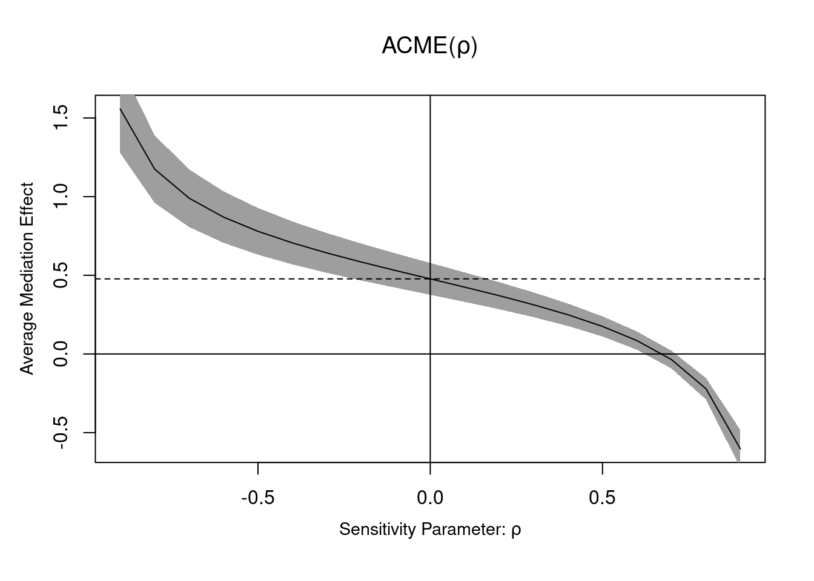

Esta guía1 presenta una discusión más formal de la independencia y de los supuestos necesarios para estimar los efectos causales. Además, describe diez tipos distintos de efectos causales en los que podríamos estar interesados. Como demostramos en nuestra guía de inferencia causal, la aleatorización simple permite producir estimaciones del promedio de los efectos causales al nivel de la unidad en una muestra. Este efecto causal promedio o efecto promedio del tratamiento (Average Treatment Effect, ATE) es un concepto poderoso porque provee una solución al problema de no poder observar todos los contrafactuales relevantes para la estimación. Sin embargo, no es la unica forma de abordar este problema. De hecho, hay muchas cantidades de interés causal diferentes. El objetivo de esta guía es ayudarlo a elegir estimandos (un parámetro de interés) y estimadores (procedimientos para calcular estimaciones de esos parámetros) que sean apropiados y significativos para sus datos.
1 Efecto promedio del tratamiento
Comenzamos revisando cómo, con la aleatorización, una simple diferencia de medias proporciona una estimación no sesgada del ATE. A continuación, presentamos algunos conceptos estadísticos comunes y la notación que utilizamos a lo largo de esta guía.
Primero definimos el efecto del tratamiento para una observación individual (una persona, hogar, ciudad, etc.) como la diferencia entre el comportamiento de esa unidad bajo tratamiento \((Y_ {i} (1))\) y su control \[\tau_{i}=Y_{i}(1)-Y_{i}(0).\] Dado que solo podemos observar $Y_{i}(1) $ o \(Y_ {i} (0)\), no tenemos forma de saber cuál es el efecto del tratamiento individual. Ahora sea \(D_{i}\) un indicador de si una observación está en el grupo de tratamiento o control. Si el tratamiento se asigna al azar, \(D_ {i}\) es independiente, no solo de los resultados potenciales sino también de cualquier covariable (observada y no observada) que pueda predecir también esos resultados \(((Y_ {i} (1), Y_ {i } (0),X_ {i} \perp \perp D_ {i}))\)2.
Suponga que nuestro diseño tiene \(m\) unidades en el grupo de tratamiento y \(N - m\) en el de control. Supongamos que reasignamos repetidamente el tratamiento al azar muchas veces y cada vez calculamos la diferencia de medias entre los grupos de tratamiento y de control y luego registramos este valor en una lista. El promedio de los valores en esa lista será el mismo que la diferencia de los promedios de los resultados potenciales reales si hubiéramos observado todos los resultados potenciales posibles para todas las observaciones 3. Otra forma de expresar esta característica del efecto promedio del tratamiento y el estimador del mismo es decir que la diferencia de medias observadas es un estimador insesgado del efecto del tratamiento causal promedio.
La inferencia estadística sobre el ATE estimado requiere que sepamos cómo este variaría entre cada aleatorización. Para eso podemos escribir la varianza entre aleatorizaciones de la siguiente manera:
y estimar esta cantidad a partir de las estimaciones muestrales de la varianza en cada grupo. 5
Un modelo lineal que regresa el resultado observado \(Y_ {i}\) en un indicador de la asignación del tratamiento \(D_{i}\) nos sirve como estimador del ATE (y con algunos ajustes adicionales de la varianza del ATE):
\[Y_{i}=Y_{i}(0)(1-D_{i})+Y_{i}(1)D_{i}=\beta_{0}+\beta_{1}D_{i}+u\] ya que podemos reorganizar los términos de modo que \(\beta_{0}\) estime el promedio entre las observaciones de control \((Y_ {i} (0) ∣D_ {i} = 0)\) y \(\beta_{1}\) estime las diferencias de las medias \((Y_ {i} (1) ∣D_ {i} = 1) - (Y_ {i} (1) ∣D_ {i} = 0)\). En el siguiente código, creamos una muestra de 1000 observaciones y asignamos aleatoriamente un tratamiento \(D_i\) con un efecto constante para la mitad de las unidades. Estimamos el ATE utilizando la regresión de mínimos cuadrados ordinarios (MCO) para calcular la diferencia de medias observada. El cálculo de las medias en cada grupo y su diferencia también produciría una estimación no sesgada del ATE. Tenga en cuenta que el ATE estimado del estimador de MCO es insesgado porque suponemos que los errores en este modelo lineal son independientes y están distribuidos de manera idéntica. Cuando nuestro tratamiento afecta tanto al valor promedio del resultado como a la distribución de las respuestas, esta supuesto ya no se cumple y necesitamos ajustar los errores estándar de MCO utilizando un estimador sándwich de Huber-White para obtener las estimaciones correctas (basadas en la varianza del ATE) para hacer inferencia estadística. 6 Finalmente, a través de la simulación demostramos que estos estimadores son insesgados.
Code
set.seed(1234) # Por replicabilidad N =1000# Tamaño de la poblaciónY0 =runif(N) # Resultado potencial bajo la condición de controlY1 = Y0 +1# Resultado potencial bajo la condición de tratamientoD =sample((1:N)%%2) #igual a 1 si la unidad es tratada, 0 de lo contrarioY = D*Y1 + (1-D)*Y0 # Variable de resultado de la poblaciónsamp =data.frame(D,Y) ATE =coef(lm(Y~D,data=samp))[2] #lo mismo que with(samp,mean(Y[Z==1])-mean(Y[Z==0])) # ATE de la muestra (SATE) con error estándar Neyman # o justificados en la aleatorización# que son iguales al error estándar del MCO cuando no hay covariables o bloqueslibrary(lmtest) library(sandwich) fit<-lm(Y~D,data=samp) coef(summary(fit))["D",1:2]
Estimate Std. Error
1.01820525 0.01841784
Code
ATE.se<-coeftest(fit,vcovHC(fit,type="HC2"))["D",2] #lo mismo que with(samp,sqrt(var(Y[D==1])/sum(D)+var(Y[D==0])/(n-sum(D))) # Evaluar si no hay sesgo y simular el error estándargetATE<-function() { D =sample((1:N)%%2) # igual a 1 si la unidad es tratada, 0 de lo contrario Y = D*Y1 + (1-D)*Y0 coef(lm(Y~D))[["D"]] } manyATEs<-replicate(10000,getATE()) ## Sesgoc(ATE=mean(Y1)-mean(Y0), ExpEstATE=mean(manyATEs))
El problema de enfocarse únicamente el efecto promedio del tratamiento es que desvía la atención del hecho de que los efectos del tratamiento pueden ser muy diferentes para diferentes tipos de personas. Si bien el “problema fundamental de la inferencia causal” sugiere que medir los efectos causales para unidades individuales es imposible, hacer inferencias sobre grupos de unidades no lo es.
La asignación aleatoria asegura que el tratamiento sea independiente de las variables de resultado y de cualquier covariable (observada y no observada). Sin embargo, a veces tenemos información adicional sobre las unidades experimentales tal como eran antes de que se realizara el experimento. Denotaremos esta información como \(X_{i}\). \(X_{i}\) puede ayudarnos a comprender cómo los efectos del tratamiento varían entre los subgrupos. Por ejemplo, podemos sospechar que los hombres y las mujeres responden de manera diferente al tratamiento, y podemos probar esta hetorogeneidad estimando el ATE condicional para cada subgrupo por separado \((CATE = E (Y_{i} (1) -Y_{i} (0)∣D_ {i}, X_{i}))\). Si nuestra covariable es continua podemos probar sus efectos moderadores interactuando la variable continua con el tratamiento. Sin embargo, tenga en cuenta que el efecto del tratamiento ahora está condicionado tanto al estado del tratamiento como al valor de la variable condicionante en la que se evalúa el efecto, por lo que debemos ajustar nuestra interpretación y los errores estándar en consecuencia.[^7]
Una advertencia: enfocarse en los efectos del tratamiento en las dimensiones que se ven afectadas por el tratamiento es peligroso y puede conducir a inferencias incorrectas. Por ejemplo, si quisiera ver cómo la administración de un medicamento produce mejoras en la salud, podría buscar por separado a hombres y mujeres, pero no podría buscar por separado a los que tomaron el medicamento y a los que no (este es un ejemplo de inferencia para que los que cumplen con la asignación al tramiento y este tipo de inferencia requiere otras técnicas descritas en el punto 4).
3 Efectos de la intención de tratar
Fuera de un entorno de laboratorio controlado, los sujetos que asignamos al tratamiento a menudo no son los mismos que los sujetos que realmente reciben el tratamiento. Cuando algunos sujetos asignados al tratamiento no lo reciben, lo llamamos un experimento con incumplimiento unilateral. Cuando además, algunos sujetos asignados al control también reciben el tratamiento, decimos que hay un incumplimiento bilateral. Por ejemplo, en un experimento para promover la votación electoral, es posible que algunas sujetos asignados para recibir una carta no lo reciban. Quizás hayan cambiado de dirección o nunca hayan revisado su correo. De manera similar, algunas observaciones asignadas al control pueden recibir el tratamiento. Quizás se acaban de mudar y el correo del inquilino anterior todavía llega a ese domicilio.
Cuando hay incumplimiento, la recepción del tratamiento ya no es independiente de las variable resultados y posibles factores que puedan generar distorsión. Las personas que realmente leen su correo probablemente difieran en varias formas de las personas que tiran su correo (o leen el correo ajeno) y estas diferencias probablemente también afecten su probabilidad de votar. La diferencia de medias entre los sujetos asignados al tratamiento y al control ya no estima el ATE, sino que estima lo que se llama un efecto por intención de tratar (Intention to treat, ITT). A menudo interpretamos el ITT como el efecto de darle a alguien la oportunidad de recibir el tratamiento. El ITT es particularmente relevante para evaluar programas e intervenciones con participación voluntaria.
En el siguiente código, generamos datos con incumplimiento unilateral. Aunque el verdadero efecto del tratamiento para las personas que realmente recibieron el tratamiento es 2, nuestro ITT estimado es menor (aproximadamente 1) porque solo algunas de las personas asignadas al tratamiento realmente lo reciben.
Code
set.seed(1234) # Por replicabilidadn =1000# Tamaño de la poblaciónY0 =runif(n) # Resultado potencial bajo el controlC =sample((1:n)%%2) # Si el sujeto cumple con la asignaciónY1 = Y0 +1+C # Resultado potencial bajo el tratamiento Z =sample((1:n)%%2) # Asignación al tratamientoD = Z*C # Indicador de si recibe el tratamientoY = D*Y1 + (1-D)*Y0 # Variable de resultadosamp =data.frame(Z,Y)ITT<-coef(lm(Y~Z,data=samp))[2]
4 Efectos de tratamiento promedio para los que cumplen
¿Qué pasa si estamos interesado en averiguar los efectos de un tratamiento en aquellas personas que realmente recibieron el tratamiento y no solo en aquellas personas a las que se les asignó el tratamiento? Por ejemplo, ¿cuál es el efecto de los anuncios de radio en el comportamiento de voto de las personas que realmente escuchan los anuncios?
Esto resulta ser un problema difícil de abordar (en esta guía puede encontrar más información al respecto). Las razones del incumplimiento del tratamiento pueden ser una variable omitida. Si bien la recepción del tratamiento ya no es independiente de los posibles resultados, la asignación del estado del tratamiento sí lo es. Siempre que la asignación aleatoria tenga algún efecto positivo sobre la probabilidad de recibir tratamiento, podemos usarlo como un instrumento para identificar los efectos del tratamiento en la subpoblación de sujetos que cumplen con la asignación al tratamiento.
Siguiendo la notación de Angrist y Pischke 7, sea \(Z\) un indicador de si se asignó una observación al tratamiento y \(D_{i}\) indica si ese sujeto realmente recibió el tratamiento. Los experimentos con incumplimiento están compuestos por personas que siempre toman el tratamiento (\(D_{i} = 1\), independientemente de $ Z_{i}\(), personas que nunca lo toman (\)D_ {i} = 0$ independientemente de \(Z_ {i}\)) y los que cumplen con la asignación (\(D_ {i} = 1\) cuando $Z_{i} = 1 $ y \(0\) cuando \(Z_ {i} = 0\)).8 Podemos estimar un efecto causal promedio del cumplidor (Complier Average Causal Effect, CACE), a veces también llamado efecto de tratamiento promedio local (LATE, Local Average Treatment Effect), al ponderar el ITT (el efecto de \(Z\) en \(Y\)) por la efectividad de la asignación aleatoria en la aceptación del tratamiento (el efecto de \(Z\) en $ D$)
\[CACE= \frac{Effect of Z on Y}{Effect of Z on D}=\frac{E(Y_i∣Z_i=1)-E(Y_i|Z_i=0)}{E(D_i|Z_i=1)-E(D_i|Z_i=0)}\]
El estimador anterior destaca el hecho de que el ITT y el CACE convergen a medida que nos acercamos a un cumplimiento total. Construir errores estándar para fracciones es algo engorroso, por lo que generalmente estimamos un CACE usando regresión de mínimos cuadrados de dos etapas con asignación aleatoria, \(Z_i\), que sirve como instrumento para la recepción del tratamiento \(D_i\) en la primera etapa del modelo. Este enfoque simplifica la estimación de errores estándar y permite la inclusión de covariables como instrumentos adicionales. Presentamos ambas estrategias en el siguiente código utilizando datos con incumplimiento bilateral. Sin embargo, tenga en cuenta que cuando los instrumentos son débiles (por ejemplo, la asignación aleatoria tuvo solo un efecto pequeño en la recepción del tratamiento), los estimadores de variables instrumentales y sus errores estándar pueden ser sesgados e inconsistentes 9.
Code
set.seed(1234) # Por replicabilidadn =1000# Tamaño de la poblaciónY0 =runif(n) # Resultado potencial bajo el controlY1 = Y0 +1# Resultado potencial bajo el tratamiento Z =sample((1:n)%%2) # Asignación al tratamientopD<-pnorm(-1+rnorm(n,mean=2*Z)) # IncumplimientoD<-rbinom(n,1,pD) # Recepción del tratamiento sin incumplimientoY = D*Y1 + (1-D)*Y0 # Variable de resultadosamp =data.frame(Z,D,Y) # IV estimate library(AER) CACE = coef(ivreg(Y ~ D | Z, data = samp))[2] # Wald Estimator ITT<-coef(lm(Y~Z,data=samp))[2] ITT.D<-coef(lm(D~Z,data=samp))[2] CACE.wald<-ITT/ITT.D
5 Efectos promedio del tratamiento en la población y la muestra
A menudo queremos hacer generalizaciones a partir de nuestra muestra para poder hacer afirmaciones sobre una población de interés más amplia 10. Sea \(S_i\) un indicador de si un sujeto está en nuestra muestra. El efecto de tratamiento promedio de la muestra (Sample Average Treatment Effect, SATE) se define simplemente como \(E(Y_i (1) -Y_i(0) | S_i = 1)\) y la población \(E(Y_i (1) -Y_i (0))\). Con una muestra aleatoria grande de una población bien definida y con cumplimiento total de la asignación al tratamiento, el SATE y el PATE (ATE de la población) son iguales en expectativa y, por lo tanto, una buena estimación para uno (como una diferencia de medias muestrales) será una buena estimación para el otro. 11
En la práctica, el grupo experimental puede consistir de un grupo de unidades seleccionadas de una manera desconocida de una población vagamente definida de tales unidades y el cumplimiento de la asignación de tratamiento puede ser menos que completo. En tales casos, nuestro SATE puede diferir del PATE y utilizar uno para estimar el otro se vuelve más complicado. Imai, King y Stuart (2008) descomponen la diferencia entre estas estimaciones en un error que surge de la selección de la muestra y el imbalance del tratamiento. El error de la selección de la muestra surge de diferentes distribuciones de covariables (observadas y no observadas) en nuestra muestra y población. Por ejemplo, las personas en un ensayo médico a menudo difieren de la población para la que estaría disponible el medicamento. El error de imbalance del tratamiento refleja las diferencias en las covariables entre los grupos de tratamiento y de control en nuestra muestra, quizás debido a una asignación no aleatoria y /o al incumplimiento.
Si bien no existen soluciones simples para los problemas creados por este tipo de error, existen pasos que puede seguir tanto en el diseño de su estudio como en el análisis de sus datos para abordar los retos que implican estimar el PATE o CACE/ LATE. Por ejemplo, la inclusión de una intervención con placebo proporciona información adicional sobre la probabilidad de recibir el tratamiento, que puede usarse para volver a ponderar el efecto de recibirlo realmente (vea, por ejemplo, Nickerson (2008)) cuando hay incumplimiento. También se podría utilizar un modelo para volver a ponderar las observaciones para ajustar el imbalance de covariables y la probabilidad desigual de recibir el tratamiento, tanto dentro de la muestra como entre una muestra y la población de interés. [^13]
[^ 13]: Angrist y Pischke (2008) proporcionan una breve introducción de los temas tratados con más detalle por Hirano, Imbens y Ridder (2003), Aronow y Middleton (2013), Glynn y Quinn (2010) y Hartman et al.(Próximo a publicación)
En el código presentado a continuación mostramos varios enfoques para estimar estos efectos implementados en el paquete CausalGAM de R 12. Específicamente, el paquete para hacer regresiones, ponderación de propensión inversa ( Inverse Propensity Weighting, IPW) y estimaciones de ponderación de propensión inversa aumentada del ATE. Combinando el ajuste de regresión con IPW, el AIPW tiene la característica de ser “doblemente robusto” en el sentido de que la estimación sigue siendo consistente incluso si hemos especificado incorrectamente el modelo de regresión o el puntaje de propensión para la ponderación de probabilidad. .
Code
# Ejemplo adapdato de ?estimate.ATE library(CausalGAM) set.seed(1234) # Por replicabilidadn =1000# Tamaño de la muestraX1 =rnorm(n) # Covariables de pre-tratamientoX2 =rnorm(n) p =pnorm(-0.5+0.75*X2) # Probabilidad desigual del tratamientoD =rbinom(n, 1, p) # TratamientoY0 =rnorm(n) # Resultados potenciales Y1 = Y0 +1+ X1 + X2 Y = D*Y1 + (1-D)*Y0 # Variable de resultado observadasamp =data.frame(X1,X2,D,Y) # Estimar el ATE con AIPW, IPW, pesos de la regresiónATE.out <-estimate.ATE(pscore.formula = D ~ X1 +X2, pscore.family = binomial, outcome.formula.t = Y ~ X1 +X2, outcome.formula.c = Y ~ X1 +X2, outcome.family = gaussian, treatment.var ="D", data=samp, divby0.action="t", divby0.tol=0.001, var.gam.plot=FALSE, nboot=50)
6 Efecto promedio del tratamiento en el grupo de tratamiento y el control
Para evaluar las implicaciones en políticas públicas de una intervención en particular, a menudo necesitamos conocer los efectos del tratamiento no solo para toda la población, sino específicamente para aquellos a quienes se administra el tratamiento. Definimos los efectos promedio del tratamiento entre los tratados (Average Treatment effect on the Treated. ATT) y el grupo de control (Average Treatment effect on the Control, ATC) como simples comparaciones contrafactuales:
\[ATT=E(Y_i(1)-Y_i(0)|D_i=1)=E(Y_i(1)|D_i=1)-E(Y_i(0)|D_i=1)\]\[ATC=E(Y_i(1)-Y_i(0)|D_i=0)=E(Y_i(1)|D_i=0)-E(Y_i(0)|D_i=0)\] Informalmente, el ATT es el efecto para aquellos que tratamos. El ATC es cuál sería el efecto para aquellos que no tratamos.
Cuando el tratamiento se asigna al azar y hay cumplimiento total, el \(ATE= ATT =ATC\), ya que \(E(Y_i (0) ∣D_i = 1) = E (Y_i (0) ∣D_i = 0)\) y \(E ( Y_i (1) ∣D_i = 0) = E (Y_i (1) ∣D_i = 1)\). A menudo, ya sea por la naturaleza de la intervención o por preocupaciones específicas sobre el costo y la etnia, el cumplimiento del tratamiento es incompleto y el ATE en general no será igual al ATT o ATC. En tales casos, como vimos en la sección anterior podemos volver a ponderar las observaciones por la probabilidad de que reciban el tratamiento para poder estimar el ATE. La misma lógica puede extenderse para producir estimaciones del ATT y ATC tanto en nuestra muestra como en la población 13.
A continuación, creamos datos en los que la probabilidad de recibir el tratamiento varía, pero puede estimarse mediante un modelo de puntaje de propensión (propensity score model en inglés) 14. Las probabilidades predecidas por este modelo se utilizan luego para ponderar y poder estimar el ATE, ATT y ATC. La ponderación inversa del puntaje de propensión intenta equilibrar la distribución de las covariables entre los grupos de tratamiento y control al estimar el ATE. Para el ATT, este enfoque de ponderación trata a los sujetos en el grupo de tratamiento como una muestra de la población objetivo (personas que recibieron el tratamiento) y hace una ponderación de los sujetos en el grupo de control según sus probabilidades de recibir el tratamiento. De manera similar, la estimación de los pesos del ATC trata las observaciones para que sirvan como unidades de control. La calidad (ausencia de sesgo) de estas estimaciones está intrínsecamente vinculada a la calidad de nuestros modelos para predecir la recepción del tratamiento. La ponderación inversa del puntaje de propensión y otros procedimientos producen balance en las covariables observadas entre los grupos de tratamiento y control, pero a menos que tengamos el “modelo verdadero” (y casi nunca conocemos el modelo verdadero), el potencial de sesgo de las covariables no observadas se mantiene y debería llevarnos a interpretar nuestro ATT o ATC estimado a la luz de la calidad del modelo que lo produjo.
Code
set.seed(1234) # Para la replicaciónn =1000# Tamaño de la muestraX1 =rnorm(n) # Covariables de pre-tratamientoX2 =rnorm(n) p =pnorm(-0.5+0.75*X2) # Propabilidad desigual de asignación al tratamientoD =rbinom(n, 1, p) # TratamientoY0 =rnorm(n) # Resultados potencialY1 = Y0 +1+X1 +X2 Y = D*Y1 + (1-D)*Y0 # Resultados observadossamp =data.frame(X1,X2,D,Y) # Modelo de puntaje de propensiónsamp$p.score<-predict(glm(D~X1+X2,samp,family=binomial),type="response") # Pesos inversos de la probabilidadsamp$W.ipw<-with(samp, ifelse(D==1,1/p.score,1/(1-p.score))) samp$W.att<-with(samp, ifelse(D==1,1,p.score/(1-p.score))) samp$W.atc<-with(samp, ifelse(D==1,(1-p.score)/p.score,1)) # IPW: ATE, ATT, ATC ATE.ipw<-coef(lm(Y~D,data=samp,weights=W.ipw))[2]ATT.ipw<-coef(lm(Y~D,data=samp,weights=W.att))[2] ATC.ipw<-coef(lm(Y~D,data=samp,weights=W.atc))[2]
7 Efecto promedio cuantil del tratamiento
El ATE se enfoca en en el punto medio que es de alguna manera el efecto para una observación típica, pero a menudo también nos preocupan las consecuencias distributivas de nuestro tratamiento. Queremos saber no solo si nuestro tratamiento aumentó el ingreso promedio, sino también si hizo que la distribución del ingreso en el estudio fuera más o menos igual.
Hacer afirmaciones sobre distribuciones es difícil. Aunque podemos estimar el ATE a partir de una diferencia de medias muestrales, en general, no podemos hacer afirmaciones sobre la distribución conjunta de los resultados potenciales \((F(Y_i (1), Y_i(0)))\) sin suposiciones adicionales. Por lo general, estos supuestos limitan nuestro análisis a una subpoblación específica 15 o nos obligan a asumir alguna forma de invariancia de rango en la distribución de las respuestas a los efectos del tratamiento 16. Puede ver 17 y Frölich y Melly (2010) para una discusión concisa sobre estos temas y Abbring and Heckman (Abbring, Jaap H, y James J Heckman. 2007. “Econometric Evaluation of Social Programs, Part III: Distributional Treatment Effects, Dynamic Treatment Effects, Dynamic Discrete Choice, and General Equilibrium Policy Evaluation.” Handbook of Econometrics 6. Elsevier: 5145–5303.) (2007) para una revisión general de estos temas.
Si estos supuestos están justificados para nuestros datos, podemos obtener estimaciones consistentes del efecto promedio cuantil del tratamiento (Quantile Treatment Effect, QTE) utilizando la regresión por cuantiles 18. Así como la regresión lineal estima el ATE como una diferencia en las medias (o, cuando se utilizan covariables en el modelo, a partir de una media condicional), la regresión por cuantiles ajusta un modelo lineal a un cuantil condicional y este modelo se puede utilizar para estimar los efectos del tratamiento para ese cuantil particular del resultado. El enfoque se puede ampliar para incluir covariables e instrumentos para considerar casos en los que hay incumplimiento. Tenga en cuenta que la interpretación del QTE es para un cuantil dado, no para un individuo en ese cuantil.
A continuación mostramos un caso en el que el ATE es 0, pero el efecto del tratamiento es negativo para respuestas en cuantiles bajos y positivo para cuantiles altos. La estimación del efecto cuantil del tratamiento sirve como herramienta para detectar efectos heterogéneos y nos permite describir las consecuencias distributivas de nuestra intervención. Estos conocimientos adicionales tienen el costo de requerir supuestos estadísticos más estrictos de nuestros datos e interpretaciones más matizadas de nuestros resultados.
Code
set.seed(1234) # Por replicabilidadn =1000# Tamaño de la poblaciónY0 =runif(n) # Resultados potencial bajo la condición de controlY1= Y0 Y1[Y0 <.5] = Y0[Y0 <.5]-rnorm(length(Y0[Y0 <.5])) Y1[Y0 >.5] = Y0[Y0 >.5]+rnorm(length(Y0[Y0 >.5])) D =sample((1:n)%%2) # Tratamiento: 1 si tratado 0 de lo contrario Y = D*Y1 + (1-D)*Y0 # Variable de resultado de la población samp =data.frame(D,Y) library(quantreg) ATE =coef(lm(Y~D,data=samp))[2] QTE =rq(Y~D,tau =seq(.05,.95,length.out=10),data=samp,method ="fn") plot(summary(QTE),parm=2,main="",ylab="QTE",xlab="Quantile",mar =c(5.1, 4.1, 2.1, 2.1))
8 Efectos de mediación
A veces queremos describir no solo la magnitud y el significado de un efecto causal observado, sino también el mecanismo (o mecanismos) que lo produjeron. ¿Nuestra intervención aumentó la participación en el grupo de tratamiento, en parte, porque aumentó el sentido de eficacia política de estos sujetos? Si es así, ¿cuánto de ese efecto total puede atribuirse a los efectos mediados por nuestro tratamiento en la eficacia y de la eficacia en la participación?
Baron y Kenny (1986) ofrecen un marco general para pensar en la mediación al descomponer el efecto total del tratamiento en su efecto indirecto sobre un mediador que luego afecta el resultado, llamado efecto de mediación causal promedio (Average Causal Mediation Effect, ACME), y el efecto directo promedio restante (emaining Average Direct Effect, ADE) del tratamiento. Sin embargo, la estimación insesgada de estos efectos requiere un conjunto de supuestos sólidos sobre la relación entre el tratamiento, los mediadores, los resultados y los posibles factores que pueden generar distorsión, denominados colectivamente ignorabilidad secuencial (Imai, Keele y Yamamoto (2010), Bullock, Green y Ha (2010). )). 19
La mayoría de los efectos causales probablemente operan a través de múltiples canales, por lo que una suposición de ignorabilidad secuencial para un experimento puede ser difícil de justificar. Por ejemplo, la fila superior en la figura siguiente ilustra situaciones en las que se mantiene la ignorabilidad secuencial, mientras que la fila inferior muestra dos (de muchos posibles) casos en los que se viola la ignorabilidad secuencial y el análisis de mediación está sesgado. En esencia, especificar los efectos de un mediador en particular requiere suposiciones sólidas sobre el papel de todos los demás mediadores en la cadena causal. Si bien algunos diseños experimentales pueden, en teoría, proporcionar un apalancamiento adicional (como ejecutar un segundo experimento paralelo en el que también se manipula al mediador), en la práctica estos diseños son difíciles de implementar y sensibles a sesgos no observados. En algunos casos, los conocimientos que esperamos obtener del análisis de mediación pueden adquirirse más fácilmente a partir de análisis de subgrupos y experimentos diseñados para probar la moderación.
Imai y colegas proponen un enfoque para el análisis de mediación que permite a los investigadores probar la sensibilidad de sus estimaciones a violaciones de ignorabilidad secuencial20. En el código presentado a continuación mostramos algunas de las características de este enfoque, implementadas en el paquete mediation en R (Tingley et al.2014). Modelamos las relaciones utilizando MCO, pero el paquete es capaz de manejar otros modelos, como modelos lineales generalizados o modelos aditivos generales, que pueden ser más apropiados para sus datos. Más importante aún, el paquete nos permite producir límites que reflejan la sensibilidad de nuestras estimaciones puntuales a algunas violaciones de ignorabilidad secuencial. En nuestros datos simulados, poco más del 20 por ciento del efecto total está mediado por nuestro mediador propuesto, M, y el sesgo de un factor de distorsión previo al tratamiento no observado tendría que ser bastante grande (\(\rho\) = .7) antes de que rechacemos el hallazgo de un ACME positivo. Sin embargo, estos límites solo son válidos si creemos que no hay factores no observados postratamiento que causen distorsión (como en el panel 4). El análisis de sensibilidad es posible, pero más complicado en tales entornos (Imai y Yamamoto 2013).
Code
set.seed(1234) # Para replicarn =1000# Tamaño de la muestraY0 =runif(n) # Resultado potencial bajo el controlD =sample((1:n)%%2) # Tratamiento: 1 si tratado, 0 de lo contrarioX<-rnorm(n) # CovariablesM<-rnorm(n=n,mean=D+rnorm(n)) # Mediador influenciado por el tratamientoY1 = Y0 +1+ M # Resultado potencial bajo el tratamientoY = D*Y1 + (1-D)*Y0 # Variable de resultado de la población samp<-data.frame(D,M,Y) library(mediation) med.f<-lm(M~D+X,data=samp) # Modelo para el mediadorout.f<-lm(Y~M+D+X,data=samp) # Modelo para la variable de resultado#Estimado del ACME y el ADE library(mediation) med.out<-mediate(med.f,out.f,treat="D",mediator="M",robustSE=T,sims=1000) # Sensibilidad del ACME a variables que no observadas que # pueden generar distorsións.out<-medsens(med.out) plot(s.out) # Grafica limites de sensibilidad

9 Efectos del tratamiento con probabilidades logarítmicas
Los efectos promedio del tratamiento parecen un poco difíciles de interpretar cuando los resultados no son continuos. Por ejemplo, un resultado binario muy común en el estudio de las elecciones se codifica como 1 cuando los sujetos votaron y 0 cuando no lo hicieron. El efecto promedio podría ser 0.2, pero ¿qué significa realmente decir que un tratamiento aumentó mi voto en 0.2? La estimación de los efectos causales de los resultados dicotómicos requiere un cuidado adicional, en particular cuando se incluyen covariables. Una cantidad común de interés causal para los resultados dicotómicos es el efecto de nuestro tratamiento sobre las probabilidades de éxito logarítmicas, definidas para el grupo experimental como:
\[\Delta = log\frac{E(Y_i(1))}{1-E(Y_i(1))} - log\frac{E(Y_i(0))}{1-E(Y_i(0))}\] Freedman (2008b) muestra que la regresión logística ajustada por covariables en experimentos aleatorios produce estimaciones sesgadas de este efecto causal. La intuición básica del argumento de Freedman proviene del hecho de que tomar el logaritmo de promedios no es lo mismo que tomar el promedio de logaritmos y, por lo tanto, el coeficiente de tratamiento estimado a partir de un condicionamiento de regresión logística sobre covariables no proporcionará un estimador consistente de probabilidades logarítmicas de éxito. Freedman recomienda en cambio tomar las probabilidades pronosticadas que varían el estado de tratamiento de los sujetos, pero manteniendo sus perfiles de covariables observados para producir un estimador consistente de las probabilidades logarítmicas.
El procedimiento básico se describe en el código presentado a continuación. Los coeficientes de la regresión logística que controlan la covariable X tienden a sobrestimar el efecto del tratamiento en las probabilidades logarítmicas, mientras que las estimaciones ajustadas de las probabilidades predecidas producen resultados consistentes.
Code
set.seed(1234) # Para replicar n =1000# Tamaño de muestraU =runif(n) X =runif(n) # Covariables obsersvadasY0 =ifelse(U>.5,1,0) # Resultados potencialesY1 =ifelse(U+X>.75,1,0) D =rbinom(n,1,.75) # Asignar aleatoriamente 3/4 al tratamiento Y = D*Y1+Y0*(1-D) samp =data.frame(X,D,Y) aT<-with(samp, mean(Y[D==1])) aC<-with(samp, mean(Y[D==0])) # log odds incondicionallog.odds<-log(aT/(1-aT))-log(aC/(1-aC)) # Regresión logística condicionando en X estima el log odds por encimafit<-glm(Y~D+X,data=samp,binomial("logit")) log.odds.logit<-coef(glm(Y~D+X,data=samp,binomial("logit")))[2] # Dataframes tilizando covariables originales para las probabilidades de predicciónD1<-data.frame(D=1,samp[,c("X")]) D0<-data.frame(D=0,samp[,c("X")]) # log-odds ajustado produce un estimador consistente del log-odds aT.adj<-predict(fit,newdata=D1,type="response") aC.adj<-predict(fit,newdata=D0,type="response") log.odds.adj<-log(mean(aT.adj)/(1-mean(aT.adj)))-log(mean(aC.adj)/(1-mean(aC.adj)))
10 Efectos atribuibles
Concluimos con una breve discusión de un caso alternativo de interés causal que puede ser particularmente útil con resultados binarios: el efecto atribuible (Rosenbaum 2010). Considere un caso simple con un resultado y un tratamiento dicotómicos. Sea \(A\) el número de resultados atribuibles al tratamiento, es decir, el número de casos en los que \(Y_i\) es igual a 1 entre los sujetos tratados y que de haber sido asginados al control no habrían producido el mismo resultado. Para un rango de \(A\), ajustamos la tabla de contingencia observada de resultados entre las unidades tratadas y comparamos esta distribución resultante con una distribución nula conocida (la distribución de resultados que hubiéramos observado si el tratamiento no hubiera tenido efecto). El rango resultante de \(A\) para el cual nuestra prueba continúa rechazando la hipótesis nula de ningún efecto proporciona un rango de efectos que son atribuibles a nuestro tratamiento.
Rosenbaum (2002) presenta extensiones de este concepto para diferentes tipos de resultados (como las variables continuas). Se puede aplicar una lógica similar para detectar respuestas poco comunes, pero extremas al tratamiento (Rosenbaum y Silber 2008).
Hansen y Bowers (2009) utilizan este enfoque para identificar el número de votos adicionales atribuibles a diferentes intervenciones en un experimento para incentivar el voto con asignación al tratamiento por conglomerados e incumplimiento unilateral. Ellos muestran que en muestras grandes se puede aproximar el intervalo de confianza para los efectos atribuibles sin evaluar cada atribución. A continuación presentamos un ejemplo de ese enfoque en el que se utilizan covariables para aumentar la precisión.
En primer lugar, definimos un efecto atribuible como \(A=\sum_iZ_i\tau_i\), donde \(\tau_i=Y_i(1)-Y_i(0)\) y \(y\in0,1\) como se muestra en Rosenbaum (2002). Es decir, el efecto atribuible es el número de “sis” o “exitos” o otras respuestas de “1” entre las unidades tratadas que no hubieramos obtenido si estas unidades hubieran sido asignadas al grupo de control.
En segundo lugar, como puede darse cuenta si escribimos el set \(U\) como el universo experimental, y el set de unidades en el grupo de control es un subconjuto de este universo, \(C\subseteq U\), por lo tanto podemos decir que \(\sum_{i\in C}Y_i-Y_i(0)=0\). Esto quiere decir que podemos representar \(A\) utulizando totales: \[A = \sum_{i=1}^NZ_i\tau_i=\sum_{i=1}^NZ_i(Y_i(1)-Y_i(0))=\sum_{i\notin C}y_i(1)-sum_{i\notin C}y_i(0)\]
= total observado general (fijo y observado) - total variable de resultado cuando es asignada al grupo de control (no observado, para estimar)
En tercer lugar, esta representación nos permite producir un intervalo de confianza basado en el diseño para A^ basándonos en la literatura de muestreo de encuestas sobre inferencia estadística para totales de muestra porque los resultados totales observados, tU, se fijan en las aleatorizaciones. Podemos usar covariables para aumentar la precisión aquí porque el estimador de regresión de la encuesta nos permite estimar el total que habríamos visto en el grupo de control: \(\hat{t}_c=\sum_{i\in U}\hat{Y}_i+\sum_{i\in U}(Y_i-\hat{Y}_i)\) with \(\hat{Y}_i=f(X_i,\beta)\) (Lohr 1999). La literatura the muestreo de encuestas prueba que a medida que \(N\rightarrow \infty\), \(CI(\hat{t}_c) \approx \hat{t}_c \pm z_{a/2}SE(\hat{t}_c)\). Por lo que se puede calcular \(\widehat{SE}(\hat{t}_c)\) de acuerdo a la teoría estándar de muestreo y luego el \(CI(\hat{A}) \approx t_U-\widehat{CI}(\hat{t}_c)\).
En el siguiente código, proporcionamos una ilustración que utiliza datos simulados para una respuesta y un tratamiento binarios. En el 85 por ciento del grupo de tratamiento, \(Y = 1\) en comparación con el 52 por ciento en el grupo de control. Una diferencia de este tamaño es consistente con que nuestro tratamiento fue la causa de que \(Y = 1\) para entre 92 y 138 sujetos, para quienes \(Y\) habría sido igual a 0 si no hubieran recibido el tratamiento. El estimador de regresión, que aprovecha la precisión obtenida al incluir covariables, produce intervalos de confianza más estrictos (98,8 a 135,1) para los efectos atribuibles.
Code
set.seed(1234) # Para replicar n =1000# Tamaño de la muestraX1 =rnorm(n) # CovariablesX2 =rnorm(n) p =pnorm(-0.5+0.75*X2) # Probabilidad desigual # de asignación al tratamiento D =rbinom(n, 1, p) p0 =pnorm(rnorm(n)) # Resultados potenciales para variable binariap1 =pnorm(X1 + X2+1) Y0 =rbinom(n, 1, p0) Y1 =rbinom(n, 1, p1) Y = D*Y1 + (1-D)*Y0 # Variable de resultado observadasamp =data.frame(D,Y,X1,X2) # Base de datosattribute<-function(treat,out,A,data){ # Tabla de contigencia del estado del tratamiento# y la variable de resultado attr.tab<-with(data,table(treat,out)) # # Matriz de valores p para efectos atribuibles A attr.ps<-matrix(NA,nc=2,nr=A,dimnames=list(NULL,c("A","p"))) for(i in1:A){ attr.ps[i,]<-c(i,fisher.test(attr.tab+matrix(c(0,i,0,-i),2,2))$p) }# Determina el rango de los efectos get.bounds<-function(){ diffs<-ifelse(.05-attr.ps[,"p"]>0,.05- attr.ps[,"p"],99) index<-(diffs %in%c(min(diffs),min(diffs[diffs>min(diffs)]))) index }# Devuelve el rango de los efectosreturn (attr.ps[get.bounds(),]) } with(samp,table(D,Y))
Y
D 0 1
0 318 339
1 51 292
Code
with(samp,apply(table(D,Y),1,prop.table))
D
Y 0 1
0 0.4840183 0.148688
1 0.5159817 0.851312
Code
attribute(treat = D, out= Y, A=200,data=samp)
A p
[1,] 92 0.04519869
[2,] 138 0.04587804
Code
# Estimador de la regresiónfit1<-lm(Y~X1+X2,data=samp,subset=D==0) hatYcU<-predict(fit1,newdata=samp) ec<-Y[D==0]-hatYcU[D==0] ## lo mismo que residuals(fit1) hatTotYc<-sum(hatYcU)+sum(ec) N<-length(Y) nctrls<-sum(1-D) thefpc<- (1- (nctrls/N)) varhattC<-N*thefpc*var(Y[D==0]) alpha<-c(.05, 1/3) alpha<-sort(c(alpha/2, 1-alpha/2)) ciTotYc<-hatTotYc+sqrt(varhattC)*qnorm(alpha) ciAE<-sort(sum(Y) - ciTotYc ) names(ciAE)<-c("limite bajo 95%","limite bajo 66%","limite alto 66%","llimite alto 95%") print(ciAE)
limite bajo 95% limite bajo \n66% limite alto 66% llimite alto 95%
98.78637 107.97975 125.90114 135.09451
11 Referencias
Aronow, Peter M, y Joel A Middleton. 2013. “A Class of Unbiased Estimators of the Average Treatment Effect in Randomized Experiments.” Journal of Causal Inference 1 (1): 135–54.
Aronow, Peter M, y Cyrus Samii. 2014. “Does Regression Produce Representative Estimates of Causal Effects?” In EPSA 2013 Annual General Conference Paper. Vol. 585.
Baron, Reuben M, y David A Kenny. 1986. “The Moderator–Mediator Variable Distinction in Social Psychological Research: Conceptual, Strategic, and Statistical Considerations.” Journal of Personality and Social Psychology 51 (6). American Psychological Association: 1173.
Bound, John, David A Jaeger, y Regina M Baker. 1995. “Problems with Instrumental Variables Estimation When the Correlation Between the Instruments and the Endogenous Explanatory Variable Is Weak.” Journal of the American Statistical Association 90 (430). Taylor & Francis: 443–50.
Brambor, Thomas, William R. Clark, y Matt Golder. 2006. “Understanding Interaction Models: Improving Empirical Analyses.” Political Analysis 14 (1): 63–82.
Bullock, John G, Donald P Green, y Shang E Ha. 2010. “Yes, but What’s the Mechanism?(don’t Expect an Easy Answer).” Journal of Personality and Social Psychology 98 (4). American Psychological Association: 550.
Chernozhukov, Victor, y Christian Hansen. 2005. “An IV Model of Quantile Treatment Effects.” Econometrica 73 (1). Wiley Online Library: 245–61.
Dunning, Thad. 2010. “Design-Based Inference: Beyond the Pitfalls of Regression Analysis?” Rethinking Social Inquiry: Diverse Tools, Shared Standards. 2nd Ed. Lanham, Md.: Rowman and Littlefield.
Freedman, David A. 2008a. “On Regression Adjustments to Experimental Data.” Advances in Applied Mathematics 40 (2). Elsevier: 180–93. ———. 2008b. “Randomization Does Not Justify Logistic Regression.” Statistical Science 23 (2). Institute of Mathematical Statistics: 237–49.
Frölich, Markus, y Blaise Melly. 2010. “Estimation of Quantile Treatment Effects with Stata.” Stata Journal 10 (3): 423.
Gerber, Alan S, y Donald P Green. 2012. Field Experiments: Design, Analysis, and Interpretation. WW Norton.
Green, Donald P. 2009. “Regression Adjustments to Experimental Data: Do David Freedman’s Concerns Apply to Political Science?” In 26th Annual Meeting of the Society for Political Methodology, Yale University, July, 23–25.
Hansen, Ben, y Jake Bowers. 2009. “Attributing Effects to a Cluster-Randomized Get-Out-the-Vote Campaign.” Journal of the American Statistical Association 104 (487). Taylor & Francis: 873–85.
Hartman, Erin, RD Grieve, R Ramsahai, and Jasjeet S Sekhon. forthcoming. “From SATE to PATT: Combining Experimental with Observational Studies.” Journal of the Royal Statistical Society.
Hirano, Keisuke, Guido W Imbens, y Geert Ridder. 2003. “Efficient Estimation of Average Treatment Effects Using the Estimated Propensity Score.” Econometrica 71 (4). Wiley Online Library: 1161–89.
Holland, Paul W. 1986. “Statistics and Causal Inference.” Journal of the American Statistical Association 81 (396). Taylor & Francis: 945–60.
Imai, K., L. Keele, D. Tingley, y T. Yamamoto. 2011. “Unpacking the Black Box of Causality: Learning About Causal Mechanisms from Experimental and Observational Studies.” American Political Science Review 105 (4). Cambridge Univ Press: 765–89.
Imai, Kosuke, y Teppei Yamamoto. 2013. “Identification and Sensitivity Analysis for Multiple Causal Mechanisms: Revisiting Evidence from Framing Experiments.” Political Analysis 21 (2). SPM-PMSAPSA: 141–71.
Imai, Kosuke, Luke Keele, y Teppei Yamamoto. 2010. “Identification, Inference and Sensitivity Analysis for Causal Mediation Effects.” Statistical Science. JSTOR, 51–71.
Imai, Kosuke, Gary King, and Elizabeth A Stuart. 2008. “Misunderstandings Between Experimentalists and Observationalists About Causal Inference.” Journal of the Royal Statistical Society: series A (Statistics in Society) 171 (2). Wiley Online Library: 481–502.
Imai, Kosuke, Dustin Tingley, and Teppei Yamamoto. 2013. “Experimental Designs for Identifying Causal Mechanisms.” Journal of the Royal Statistical Society: Series A (Statistics in Society) 176 (1). Wiley Online Library: 5–51.
Lin, Winston. 2013. “Agnostic Notes on Regression Adjustments to Experimental Data: Reexamining Freedman’s Critique.” The Annals of Applied Statistics 7 (1). Institute of Mathematical Statistics: 295–318.
Lohr, Sharon L. 1999. “Sampling: DesignandAnalysis.” Pacific Grove, CA: Brooks/Cole.
Neyman, Jerzy. 1990 [1923]. “On the Application of Probability Theory to Agricultural Experiments. Essay on Principles. Section 9.” Statistical Science 5 (4). Institute of Mathematical Statistics: 465–72 (Translated by D.M. Dabrowska and T.P. Speed from the original Polish).
Nickerson, D.W. 2008. “Is Voting Contagious? Evidence from Two Field Experiments.” American Political Science Review 102 (1). Cambridge Univ Press: 49.
Rosenbaum, Paul. 2002. “Attributing Effects to Treatment in Matched Observational Studies.” Journal of the American Statistical Association 97 (457). Taylor & Francis: 183–92.
Rosenbaum, Paul R. 2002. Observational Studies. Springer.
Rosenbaum, Paul, and Donald B. Rubin. 1983. “The Central Role of the Propensity Score in Observational Studies for Causal Effects.” Biometrika 70 (1). Biometrika Trust: 41–55.
Rosenbaum, Paul, and Jeffrey H Silber. 2008. “Aberrant Effects of Treatment.” Journal of the American Statistical Association 103 (481). Taylor & Francis: 240–47.
Rosenbaum, PR. 2010. “Design of Observational Studies.” Springer Series in Statistics. New York [etc.]: Springer. Tingley, Dustin, Teppei Yamamoto, Kentaro Hirose, Luke Keele, and Kosuke Imai. 2014. “mediation: R Package for Causal Mediation Analysis.” Journal of Statistical Software 59 (5): 1–38. http://www.jstatsoft.org/v59/i05/.
Puede consultar Holland (1986), Angrist y Pischke Angrist, Joshua y Jörn-Steffen Pischke. 2008. Mostly Harmless Econometrics: An Empiricist’s Companion. Princeton University Press.↩︎
Ver Holland, Angrist y Pischke para una discusión más formal sobre la independencia y los supuestos necesarios para estimar los efectos causales.↩︎
Es decir, \((E(Y_i(1)|D=1)=E(Y_i(1)|D=0)=E(Y_i(1)))\) and \((E(Y_i(0)|D=1)=E(Y_i(0)|D=0)=E(Y_i(0)))\)↩︎
Las estimaciones a menudo se escriben con un acento (\(\widehat {ATE}\)) para reflejar la diferencia entre la estimación de nuestra muestra particular y el estimando, es decir la cantidad objetivo de nuestra estimación que no podemos observar. A menos que se indique lo contrario, en esta guía nos enfocamos en generar estimaciones a partir de la muestra y posteriormente omitimos esta notación explícita. Ver Gerber y Green (2012) para una introducción concisa a esta distinción e Imbens y Wooldridge (2007) para una revisión completa de estos conceptos.↩︎
La covarianza de \(Y_{i} (1), Y_ {i} (0)\) es imposible de observar, pero el estimador “Neyman” de la varianza que omite el término de covarianza proporciona una estimación conservadora (demasiado grande) de la varianza muestral verdadera porque tendemos a suponer que la covarianza es positiva. Dado que en general nos preocupa minimizar la tasa de error de tipo I (rechazando incorrectamente la hipótesis nula verdadera), preferimos utilizar estimaciones conservadoras de la varianza. Ver también Dunning (2010) y Gerber y Green (2012) para la justificación del estimador de varianza conservador.↩︎
Angrist, Joshua y Jörn-Steffen Pischke. 2008. Mostly Harmless Econometrics: An Empiricist’s Companion. Princeton university press.↩︎
Por lo general, asumimos monotonicidad, lo que significa que no hay quienes desobedecen o desafían la asignación o personas que solo toman el tratamiento cuando se les asigna el control (\(D_{i} = 1\) cuando \(Z_i = 0\) ) y rechazan el tratamiento cuando se les asigna al tratamiento.↩︎
Angrist, Joshua, and Jörn-Steffen Pischke. 2008. Mostly Harmless Econometrics: An Empiricist’s Companion. Princeton university press.; Bound, Jaeger, and Baker (1995)↩︎
Vea Imai, King y Stuart (2008) para una revisión más detallada de los temas discutidos en esta sección.↩︎
Imbens, Guido y Jeffrey M Wooldridge. 2007. What’s New in Econometrics? NBER.↩︎
Glynn, Adam N y Kevin M Quinn. 2010. “An Introduction to the Augmented Inverse Propensity Weighted Estimator.” Political Analysis 18 (1):36–56.↩︎
En Hartman et al. (próximo a publicar) puede encontrar un ejemplo en el que se combinan datos experimentales and observacionales para pasar de un ATE de la muestra a una estimación del ATT de la población.↩︎
Chernozhukov y Hansen (2005). Es decir, el tratamiento puede tener efectos heterogéneos pero se conserva el orden de los resultados potenciales. Ver Joshua Angrist y Jörn-Steffen Pischke. 2008. Mostly Harmless Econometrics: An Empiricist’s Companion. Princeton university press.↩︎
Koenker, Roger Y Kevin Hallock. 2001. “Quantile Regression: An Introduction.” Journal of Economic Perspectives 15 (4): 43–56 para una revisión concisa de la regresión por cuantiles.↩︎
Koenker, Roger Y Kevin Hallock. 2001. “Quantile Regression: An Introduction.” Journal of Economic Perspectives 15 (4): 43–56 para una revisión concisa de la regresión por cuantiles.↩︎
Imai, Keele y Yamamoto (2010) definen formalmente las condiciones necesarias para la ignorabilidad secuencial como: \({Y_i(d',m),M_i(d)}\perp D_i|X_i=x, Y_i(d',m)\perp M_i(d)|D_i=d,X_i=x\). Esto quiere decir, primero, dado unas covariables de pretatamiento, los resultados potenciales de Y y M son independientes del tratamiento D y segundo que condicionado a las covariables previas al tratamiento y al estado del tratamiento, los resultados potenciales también son independientes del mediador.↩︎
Vea por ejemplo Imai, Keele, y Yamamoto (2010), Imai et al. (2011), Imai, Tingley y Yamamoto (2013), Imai y Yamamoto (2013). Así como también Imai, Tingley, y Yamamoto (2013) para perspectivas diferentes en la desabi for different perspectives sobre la conveniencia de abordar hacer aserciones sobre posible mediación con análisis de sensibilidad o de límites (bounds).↩︎